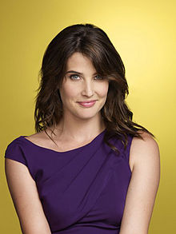
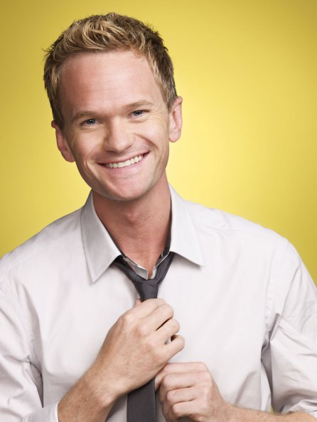
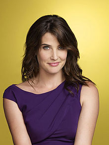
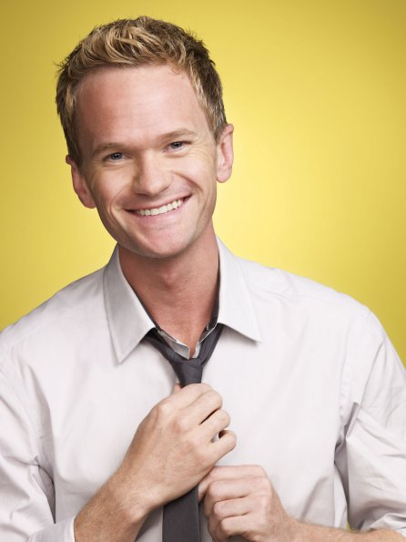

HIMYM
How I Met Your Mother (no Brasil, How I Met Your Mother ou Como Eu Conheci Sua Mãe e em Portugal, Foi Assim que Aconteceu) é uma sitcom estadunidense da CBS criada por Carter Bays e Craig Thomas. Estreou no dia 19 de setembro de 2005. A temporada 2013-14, sua nona edição, é a última, encerrando-se em 31 de março de 2014, após 208 episódios. A série mostra Ted Mosby em 2030 narrando aos seus filhos a história de como conheceu a mãe deles.
Conhecido por sua estrutura única e humor excêntrico, How I Met Your Mother recebeu críticas positivas na maior parte de suas nove temporadas e ganhou status cult ao longo dos anos, com milhões de fãs. O seriado foi indicado para 24 prêmios Emmy até então, ganhando sete. Em 2010, Alyson Hannigan ganhou como Atriz de Comédia Favorita pelo público. Em 2012, sete anos depois de sua estréia, a série ganhou na categoria de Seriado de Comédia Favorito pelo público, e Neil Patrick Harris ganhou o prêmio de Ator de Comédia Favorito pelo público.
How I Met Your Mother começou a ser exibida no Brasil pelo canal Fox Life em 4 de janeiro de 2006, e deixou de ser exibida em maio de 2010. Estreou em Portugal pelo canal Fox Life em fevereiro de 2008, depois foi exibido pelo canal Fox Portugal e agora é exibido pela Fox Comedy. Voltou a ser exibida no Brasil no dia 2 de junho de 2012, na grade da FOX Brasil. No Brasil, começou a ser exibida em rede aberta e em horário nobre pela Rede Bandeirantes em 2 de janeiro de 2014, e passou a ser exibida de madrugada pelo canal a partir de 22 de fevereiro de 2015, e desde 2014 é exibida no Brasil pelo canal SONY.
Conheça os personagens:
 


